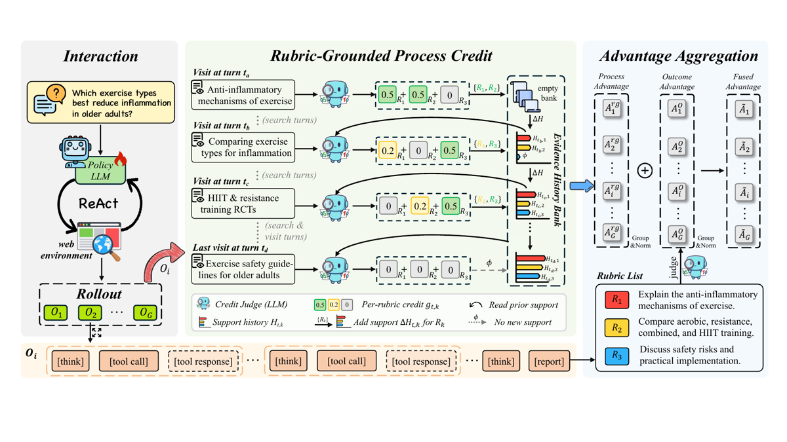
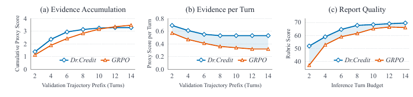
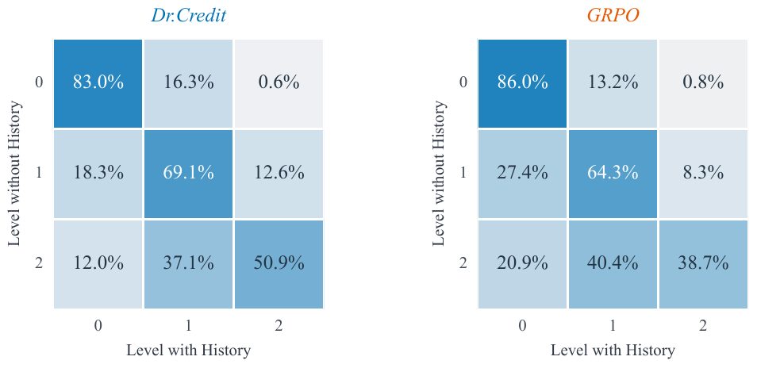

TL;DR : les rubriques qui servent déjà à noter le rapport final servent aussi de référence pour noter chaque tour d'outil — un juge LLM évalue le support marginal qu'une page apporte à chaque rubrique relativement à l'historique des points de support déjà acceptés pour cette rubrique dans le même rollout ; la somme donne un crédit par tour, normalisé en groupe et additionné à l'avantage GRPO d'outcome.
Claim principal : sur 4 benchmarks deep research, à initialisation SFT / données / reward d'outcome / budget d'entraînement / harness d'éval identiques, l'ajout du crédit de process fait passer la moyenne de 58,2 → 61,7 (+3,5 pts) vs GRPO [§4.2, Tab. 1] ; l'ablation de l'historique par rubrique coûte −3,0 pts de moyenne sur 3 benchmarks [Tab. 3(b)] ; le coût de scoring est absorbé par l'asynchrone et par le raccourcissement des trajectoires (63,96 h vs 75,14 h sur 200 steps) [Tab. 6].
Contribution revendiquée explicitement comme générale : « a general approach to process reward design for agent RL on open-ended tasks with rubric-based evaluation… without requiring a canonical answer » [§1, contribution (1)] — testée sur un seul domaine (deep research), un seul backbone, un seul juge.
| Case | Verdict | Justification en une ligne |
|---|---|---|
baselines |
✅ vrai | GRPO apparié (même init SFT, mêmes 7 149 paires, même reward d'outcome, même budget, même harness) + DeepRubric-8B et DR Tulu-8B réévalués avec les mêmes outils sur le même Qwen3-8B [§4.1, App. A.3]. |
ablation |
✅ vrai | Quatre familles d'ablations isolant des pièces distinctes : composants du crédit [Tab. 2], fusion outcome/process [Tab. 3(a)], historique [Tab. 3(b)], discounting [Tab. 2, App. B.4]. |
variance |
❌ faux | Un seul run par configuration, aucune seed, aucun CI sur les scores de benchmark ; les seuls bootstraps portent sur une re-notation offline [App. B.2]. |
coherence |
✅ vrai | Tous les chiffres de l'abstract et de l'intro retrouvés et arithmétiquement exacts dans le corps/annexes ; aucun chiffre contredit ni introuvable (§7.0). |
eval |
❌ faux | Aucun juge validé contre des humains (ni outcome, ni crédit, ni citations) ; juge d'éval de DeepRubric-Val non précisé et probablement identique au juge de reward ; web vivant non figé. |
repro |
❌ faux | Ni code, ni données, ni poids, ni env publiés ; services propriétaires (Serper, Firecrawl) et accélérateur non standard (PPU-ZW810E). Seuls les prompts et hyperparamètres sont complets. |
Origine des tâches. Aucune tâche n'est créée par ce papier. Les paires (question, rubric set) viennent de DeepRubric [§4.1, App. A.1] — rubriques « evidence-grounded », produites par un travail antérieur. Les benchmarks OOD : ResearchQA (QA scientifique), DeepResearchBench (rapports, métrique RACE), ResearchRubrics (rubriques écrites par des experts) [§4.1]. ⚠️ Qui écrit les rubriques et à quel coût n'est pas dans ce papier : non précisé. C'est un intrant externe, et c'est le point aveugle pour un transfert juridique.
Pipeline de données [App. A.1] : 1. 9 062 paires question–rubriques DeepRubric ; 2. exclusion des 1 785 questions présentes dans la collection SFT intermédiaire → 7 277 ; 3. 128 tirées au hasard = DeepRubric-Val ; 7 149 = set RL ; 4. vérification de disjonction par matching exact du texte de question entre SFT / RL / Val (⚠️ exact-match seulement : aucun contrôle de near-duplicate / paraphrase).
Données SFT avant RL [App. A.1] : GLM-5.2 génère des trajectoires de recherche sans accès aux rubriques (prompt Fig. 12). Filtres cumulatifs : structure du rapport, citations, arguments d'outils valides, score rubrique normalisé ≥ 0,65, et 4–18 tours de recherche suivis d'un rapport. 1 505 trajectoires retenues, pas de split de validation ; les instructions système sont remplacées par le prompt agent partagé (Fig. 11) à l'export. Rôle : cold start de format (balises <cite>, bloc <answer> unique, un seul appel d'outil par tour) + comportement de recherche.
Volume RL : 7 149 paires, 200 steps, 32 questions/batch, G = 8 → ≈ 6 400 questions vues en une passe (≈ 0,9 époque) [§4.1 Impl., Tab. 4].
Distribution de difficulté / curriculum / rééchantillonnage : non précisé — aucun filtrage par pass@k du modèle de base, aucun curriculum, aucun rééchantillonnage, aucune sélection par difficulté. ⚠️ Pour un papier ENV c'est une absence notable : tout l'effort est sur le crédit, rien sur la sélection des tâches.
Contamination : traitée uniquement comme disjonction train/val sur DeepRubric ; rien sur le chevauchement entre DeepRubric et ResearchQA / DRB / ResearchRubrics. Non précisé.
Coût humain : aucune annotation humaine dans ce travail (⚠️ y compris pour valider les juges). Les rubriques expertes de ResearchRubrics ne servent qu'à l'éval.
Observation [App. A.2, Fig. 11] :
- Search → jusqu'à 2 requêtes, 3 résultats par requête, chaque résultat = titre + URL + snippet + source ID (S*), plafond combiné 4 096 tokens ;
- Visit → jusqu'à 2 URLs ; Qwen3.6-35B-A3B extrait, conditionné au goal fourni par l'agent, un couple evidence + summary dans 2 048 tokens par page (prompt Fig. 13) ; format retourné : <webpage ...><evidence>…</evidence><summary>…</summary></webpage> avec ID W*.
Espace d'actions / outils (signatures recopiées, Fig. 12) :
- web_search : {"queries": ["..."]}, 1 ou 2 requêtes non vides ;
- web_visit : {"urls": ["..."], "goal": "..."}, 1 ou 2 URLs + un goal non vide ;
- contrainte : exactement un appel d'outil par tour ; « Visit only exact URLs returned by a successful search in an earlier assistant turn » ; seuls les W* de visites réussies sont citables, jamais les S*.
Multi-turn / horizon [App. A.3] : ReAct [think] → [tool call] → [tool response], puis [think] → [answer]. ≤ 20 tours assistant (réponse finale comprise), 8 192 tokens générés par tour, contexte politique 32 768 tokens pour SFT, RL et le tableau principal. Les observations consomment le contexte et le rapport final doit tenir dans ce qui reste. Gestion du contexte long : aucune (ni troncature, ni résumé, ni mémoire externe) — seulement la compression implicite via l'extraction à 2 048 tokens/page.
Exécution [App. A.2] : Serper (interface Google Search) pour Search, Firecrawl pour Visit — APIs externes réelles, donc non déterministe, non resettable, non rejouable ; aucun timeout, aucune politique de retry, aucune mise en cache rapportés. Non précisé. ⚠️ Conséquence directe : les baselines « + Our Tools » ne sont pas évaluées sur un web figé ; aucune garantie de comparabilité temporelle entre runs.
Gestion des erreurs : « failed retrieval or extraction produces a tool error » [App. A.2] ; le prompt SFT demande de corriger une fois une requête malformée puis de ne pas répéter un chemin qui échoue [Fig. 12]. Le juge de crédit traite explicitement CAPTCHA / erreurs d'accès / pages vides / texte de navigation / titre seul comme aucun support [Fig. 16]. Si la limite de tours ou de contexte est atteinte sans rapport valide, « the evaluated model completes the report from the original question and collected trajectory » [App. A.3] — ⚠️ ce fallback est appliqué à tous les modèles évalués, et il est à la fois un pansement de robustesse et un facteur de confusion (un modèle qui sature le contexte est rattrapé par une génération hors harness).
Exemple de trajectoire : le papier n'en donne aucune verbatim ; seulement le schéma en bas de la Fig. 2 ([think] [tool call] [tool response] … [think] [report], les [tool response] en pointillés étant masqués de la loss) et l'exemple illustratif « Which exercise types best reduce inflammation in older adults? » avec 3 rubriques et 4 visites.
Somme pondérée [App. A.5, Eq. 9] :
r^O = 0,70 r_rubric + 0,05 r_format + 0,05 r_search + 0,15 r_cite + 0,05 r_length
r_rubric : juge LLM, une rubrique à la fois, score entier 0–4 divisé par 4, puis moyenne pondérée par w_k (Eq. 1) [Fig. 14]. Prompt recopié : barème 4 = « Fully satisfies… All essential components explicitly, correctly, sufficiently addressed » ; 3 = « Mostly… minor omissions » ; 2 = « Partially… one or more essential parts missing » ; 1 = « Minimally… mostly generic » ; 0 = « Does not satisfy ». Garde-fous explicites : « Do not reward an answer merely for mentioning related topics or keywords », « Generic, high-level, or background-only discussion should score low ». Sortie : {"score": x} uniquement. Les rubriques sont typées factual ou logical, avec des consignes distinctes.r_cite = 0,4 r_ID + 0,6 r_semantic : r_ID = fraction des références bien formées qui résolvent vers une evidence de la trajectoire ; r_semantic = pour chaque claim, moyenne harmonique du support joint des sources et de la fraction de sources qui la soutiennent individuellement. Les citations structurellement non notables reçoivent zéro ; les échecs techniques du juge sont exclus [App. A.5]. Prompt de vérification de citation recopié [Fig. 15] : score 2 = toute proposition matérielle (qualificatifs compris) directement soutenue ; 1 = partiel ; 0 = aucun ; « An equivalent paraphrase counts; mere topic overlap or a plausible inference does not » ; 3 exemples few-shot.r_format : bloc réponse, balisage de citation, appels porteurs de requêtes, blocs de raisonnement. r_search (nombre d'appels) et r_length : croissance linéaire jusqu'à un plafond [App. A.5]. ⚠️ Un reward de longueur croissant-jusqu'au-plafond est un incitatif à l'allongement : la Fig. 10(c) montre effectivement les rapports passer de ~1 000 à ~4 576 tokens (Dr.Credit) et ~4 900 (GRPO) pendant l'entraînement.Chaîne exacte, telle qu'instanciée pour Visit [§3.1, §3.3, Fig. 16, Fig. 17] :
question ; rubric = {id, type: factual|logical, description, weight, trusted_evidence[]} ; prior_confirmed_support_points_for_this_rubric[] (= l'historique H_{t,k}) ; current_visit_turn = {visit_index, research_turn_index, reasoning (le think pré-visite), tool_calls, pages[{page_id, url, evidence, summary}]}.{level: 0|1|2, page_ids[], support_points[1-3], rationale}. Définitions recopiées [Fig. 16] :
- 0 = « failed or irrelevant retrieval; topical overlap without a concrete usable fact; scope mismatch; or information already present in prior confirmed support with no material strengthening » ;
- 1 = « a new concrete fact, premise, relation, constraint, or materially stronger verification… but indirect, incomplete, narrow, or covers only a secondary part of its core requirement » ;
- 2 = « new, direct, specific, well-supported evidence that substantially satisfies a core factual requirement or supplies a key relation/premise for a logical rubric ».
Règles de nouveauté : « Judge semantic novelty, not wording novelty. Exact paraphrases and repeated values are level 0. A materially stronger source, important qualification, more precise value, or missing part of an earlier clue may be level 1 or 2 ». Règles de calibration anti-sur-notation : pas de niveau 2 pour une evidence détaillée qui ne couvre qu'une partie secondaire ; interdiction de combiner le raisonnement pré-visite avec les pages pour « fabriquer » une relation absente ; une page en échec n'invalide pas une autre page substantielle du même tour. Politique evidence > summary : « If Summary conflicts with Evidence, follow Evidence ». Et : « Do not calculate the visit score » — le juge ne produit qu'un ordinal, l'arithmétique est externe.g_{t,k} = 0 / 0,2 / 0,5 [§4.1 Impl.].c_t^v = Σ_k g_{t,k} (Eq. 3), plafonnée à 1 [§4.1 Impl.]. ⚠️ La somme est non pondérée : weight est passé au juge mais n'entre pas dans l'arithmétique du crédit, alors que l'outcome est pondéré par w_k (Eq. 1). Incohérence de design non discutée par les auteurs. ⚠️ Le plafond à 1 sature dès 2 rubriques au niveau 2 : une page excellente sur 4 rubriques vaut autant qu'une page excellente sur 2.H_{t+1,k} = H_{t,k} ∪ ΔH_{t,k} (Eq. 4), où ΔH = les support_points extraits des pages courantes (vide si niveau 0). L'évaluation lit l'historique avant la mise à jour [§3.1]. Les historiques partent vides et évoluent indépendamment à l'intérieur de chaque rollout (pas de partage entre rollouts du groupe).Search [§3.3, Fig. 3] — crédit composite :
- navigation c_t^nav : matching des URLs de résultats normalisées vers les visites ultérieures du même rollout, puis somme des crédits Visit appariés, plafonnée à 1. ⚠️ C'est un double comptage assumé : la même evidence crédite le tour de recherche et le tour de visite.
- snippet c_t^snp : pour les résultats jamais visités dans la trajectoire complète, un juge indépendant (sans lecture ni écriture d'historique) renvoie une liste sparse de matches rubrique↔snippet, chaque match acceptée valant η = 0,1. Prompt recopié [Fig. 18] : « Snippets are noisy and unverified; default to no match » ; seule la lettre du snippet compte (titres, URLs, formulation de requête, evidence de référence de la rubrique et connaissance externe exclues) ; une rubrique au plus une fois ; un fait atomique affecté à une seule rubrique ; citation exacte (evidence_quote) obligatoire ; sinon {"matches": []}.
- c_t^s = c^nav + c^snp, plafonné à 1. Note d'implémentation révélatrice : les jugements de snippet sont sautés quand le crédit de navigation est saturé [App. B.3].Qui écrit la rubrique, à quel coût (exigence (a), deuxième moitié) : personne, dans ce papier — les rubriques sont importées de DeepRubric (train/val) et de ResearchRubrics (experts, éval seule). Coût d'écriture non précisé. Ce qui est chiffré, c'est le coût de notation : 29,09 tâches de juge de process par trajectoire, latence de scoring complète 23,03 s/trajectoire contre 2,40 s pour GRPO [Tab. 7] ; 10 043,93 tâches de process par step aux steps 1–40, retombant à 6 231,20 aux steps 161–200 (−38,0 %) [App. C.2]. Le juge est Qwen3.6-35B-A3B, qui fait aussi l'extraction de pages, la notation rubrique du rapport et la vérification de citations [§4.1 Impl., App. A.1].
Algorithme : GRPO (DeepSeekMath) avec une seule modification, l'avantage fusionné par tour [§3.2] :
A^rg_{i,t} = (c_{i,t} − μ^rg)/σ^rg avec μ/σ calculés sur tous les tours de politique non finaux du groupe de rollouts, tours à crédit nul inclus, poids égal par tour quelle que soit la longueur du rollout, écart-type de population ; A^O_i = (r_i − μ^O)/σ^O avec la moyenne et l'écart-type d'échantillon GRPO sur les G rewards ;Ã_{i,t} = A^O_i + A^rg_{i,t} pour 0 ≤ t < T_i, et Ã_{i,T_i} = A^O_i sur le tour du rapport — donc le rapport final ne reçoit que de l'outcome, et chaque tour intermédiaire reçoit la totalité de l'avantage d'outcome plus son crédit ;Ã_{i,t(i,j)}, moyenne sur tous les tokens de politique du groupe (agrégation token-level), observations d'environnement masquées de la loss mais conservées dans le conditionnement.Hyperparamètres [Tab. 4, §4.1] : LR RL 5e-7 ; 32 questions/batch ; G = 8 ; 200 steps ; température de rollout 1,0, top-p 1,0 ; PPO epochs 1, clipping ε = 0,2 ; coefficient KL = 0 (le terme KL figure pourtant dans Eq. 7 — ⚠️ incohérence formelle : la référence π_ref est inopérante) ; poids de l'avantage de process = 1 ; max 20 tours, 8 192 tokens/tour, contexte 32 768. SFT : AdamW, LR 1e-5, cosine 30 % warmup, batch 1 × accum 4, BF16, 3 époques, checkpoint époque 2 retenu — et le papier précise que le schedule couvrant 3 époques « fixe la durée SFT à deux époques sans sélection de checkpoint par validation » [App. A.1].
Variante testée puis abandonnée : propagation temporelle escomptée (Eq. 8, App. B.4) — D^(γ)_{i,t} = Σ_{u≥t} γ^{u−t} A^rg_{i,u}, γ = 0,95, accumulée en arrière après normalisation, sans renormalisation ni clipping d'avantage additionnel, rapport exclu. Dégrade les 4 benchmarks, avec ou sans snippets (59,0 et 59,9 vs 60,4 et 61,7) [Tab. 2 ablation]. Conclusion utile : le crédit immédiat (γ = 0) bat le crédit propagé — cohérent avec le fait que l'attribution spatiale est déjà faite par le matching d'URL.
Stabilité : aucune instabilité rapportée, aucune astuce de stabilisation (pas de clip-higher, pas de dynamic sampling, pas de filtrage des groupes à reward constant). Non précisé.
Compute [App. A.1, Tab. 6] : 16 accélérateurs PPU-ZW810E, 96 GB chacun (modèles auxiliaires sur nœuds séparés ou via API) ; 63,96 h pour 200 steps (Dr.Credit) contre 75,14 h (GRPO), décomposées en rollout collection 42,89 vs 49,41 et policy update 13,91 vs 17,12.
Dynamique [Fig. 5, Fig. 10] : - validation DeepRubric : Dr.Credit dépasse le score final de GRPO dès le step 120 et finit avec +3,2 pts [§4.5] ; - rubric score d'entraînement : les deux courbes sont quasi superposées (~69 vs ~67,5 en fin) [Fig. 10(a)] — ⚠️ l'écart se voit surtout en validation/OOD, pas sur le reward optimisé ; - nombre de tours de recherche : 16 → ~6,5 pour Dr.Credit contre ~11 pour GRPO [Fig. 10(b)] ; chiffré par ailleurs 13,2 → 7,8 tours d'interaction par trajectoire entre les steps 1–40 et 161–200 [App. C.2] ; - longueur de rapport croissante pour les deux (~1 000 → 4 576 / 4 900 tokens) [Fig. 10(c)] ; - entropie : non rapportée.
Le papier ne contient aucune section de failure modes et ne rapporte aucun cas de reward hacking. Les auteurs n'affirment pas qu'il n'y en a pas : le sujet n'est simplement jamais abordé. ⚠️ Peu crédible vu la conception : reward de longueur croissant jusqu'à un plafond, reward de nombre d'appels, juge LLM unique pour l'extraction et la notation et le crédit, crédit de snippet attribuable sans visite.
Ce que les données du papier laissent néanmoins voir, en étant honnête sur le statut de chaque lecture :
| Comportement observable | Où | Détection | Correction / statut |
|---|---|---|---|
| Effondrement du nombre de tours (16 → 6,5), nettement plus marqué que GRPO (→ 11) | Fig. 10(b), App. C.2 | courbes d'entraînement | Présenté comme une vertu (« more efficient evidence acquisition ») et utilisé pour expliquer le gain de temps. ⚠️ Lecture alternative non écartée : le crédit immédiat, normalisé par tour avec poids égal, pénalise mécaniquement les tours tardifs à crédit nul (l'historique sature) → incitation structurelle à arrêter tôt. Signal cohérent : GRPO dépasse Dr.Credit sur l'accumulation d'evidence à 12 et 14 tours [§4.4, Fig. 4(a)]. |
| Inflation de la longueur des rapports (~1 000 → ~4 576 tokens) | Fig. 10(c) | diagnostic d'entraînement | Non traitée ; r_length (poids 0,05) encourage l'allongement jusqu'au plafond. Dr.Credit reste plus court que GRPO (4 576 vs 4 900). |
| Saturation du plafond de crédit (moins de scores plafonnés avec historique, plus de scores intermédiaires) | App. B.2, Fig. 7 | re-notation appariée | Décrit, non corrigé ; le plafond à 1 reste. |
| Double comptage search ↔ visit (navigation credit) | §3.3 | — | Choix de design assumé, jamais interrogé. |
| Jugements de snippet sautés quand la navigation sature | App. B.3 | mentionné en note de méthode | Introduit une dépendance du crédit de snippet à l'état de saturation ; les bornes « ≤ » de la Tab. 4 en découlent. |
| Pages inutilisables ou exactement dupliquées | App. B.2 | filtres | Filtrées dans l'analyse de re-notation uniquement ; rien n'indique un filtre équivalent pendant l'entraînement. |
Comportement émergent positif revendiqué : meilleure qualité de rapport sous budget de tours contraint — 67,69 à 8 tours contre le meilleur score GRPO observé de 66,41 à 12 tours [§4.4].
| Chiffre annoncé | Où il est annoncé | Source dans le papier | Verdict |
|---|---|---|---|
| « outperforms the evaluated open deep research baselines on every primary metric and submetric » | abstract, §1, §4.2 | Tab. 1 : Dr.Credit en gras sur les 11 colonnes face aux groupes Naive RAG, Open DR et Qwen3-8B-based | confirmé — mais la portée exacte est « best across the lower three model groups » (légende Tab. 1), pas face aux frontier |
| « with an 8B-parameter backbone, average performance competitive with the evaluated frontier proprietary models » | abstract, §1, §6 (conclusion) | Tab. 1 : Avg 61,7 vs Kimi K3 63,6, GPT-5.6-luna 63,0, DeepSeek-V4-Pro 60,4, Opus 4.8 60,2, GLM-5.3 59,8 | sur-généralisé — vrai dans un seul réglage : frontier models contraints dans le harness des auteurs (« + Our Tools », 20 tours, 32 k contexte). Dr.Credit est sous les deux meilleurs. Les vrais services Deep Research n'ont pas de colonne Avg, et Gemini Deep Research fait 61,5 sur ResearchRubrics contre 50,3 pour Dr.Credit [Tab. 1] |
| « 3.5-point average gain from adding process credit » | §4.2 | Tab. 1 : 61,7 − 58,2 = 3,5 ; recoupé par Tab. 3(a) ΔAvg₃ = −3,5 (DRub −3,2 ; RQA −4,4 ; DRB −2,9) | confirmé (arithmétique exacte dans les deux tableaux) |
| « removing evidence history lowers scores on all three benchmarks, average −3.0 » | §4.3 | Tab. 3(b) : −3,0 / −3,9 / −2,1 → moyenne −3,0 | confirmé |
| « reaching a cumulative score of 2.94 within 6 turns compared with GRPO's 2.83 within 8 » | §4.4 | Fig. 4(a) ; valeurs numériques non tabulées | confirmé (cohérent avec la courbe ; les valeurs exactes n'existent qu'en texte) |
| « 0.53 versus GRPO's 0.36 at eight turns (+47.2 %) » | §4.4 | Fig. 4(b) ; 0,53/0,36 = 1,472 | confirmé arithmétiquement ⚠️ mais la métrique est le crédit lui-même (proxy circulaire, cf. infra) |
| « rubric score of 67.69 [8 tours] exceeding GRPO's best observed score of 66.41 at twelve turns » / « one-third smaller allowed turn budget » | §4.4 | Fig. 4(c) ; 8 = 12 × (1 − 1/3) | confirmé |
| « surpasses GRPO's final validation score by step 120 … finishes with a 3.2-point advantage » | §4.5 | Fig. 5(a) ; écart final recoupé par Tab. 1 (70,6 − 67,4 = 3,2) | confirmé pour l'écart final ; le « step 120 » n'est lisible que sur la courbe (aucune table) |
| « saving 11.18 hours (14.9 %) over 200 steps » | §4.5 | Tab. 6 : 75,14 − 63,96 = 11,18 ; 11,18/75,14 = 14,9 % | confirmé (à steps fixés, pas à qualité égale — reconnu App. C.2) |
| « W₁ ≤ 0.077 … at least 96.6 % of fused advantage signs preserved » | App. B.3 | Tab. 5 | confirmé sur les lignes affichées, mais sur-généralisé comme preuve de robustesse : lignes « selected for signal stability from a 53-configuration sweep », et aucune des 53 configurations n'a été réentraînée |
| « reports average approximately 4,576 and 4,900 tokens, respectively » | App. C.1 | Fig. 10(c) | confirmé par la figure (Dr.Credit la courbe basse) ; ⚠️ le « respectively » du texte n'a pas d'antécédent explicite — désambiguïsé uniquement par la figure |
Aucun chiffre introuvable ni contredit. La cohérence interne abstract ↔ texte ↔ tableaux est bonne (case coherence ✓) ; les problèmes sont de portée, pas d'arithmétique.
| Benchmark | Dr.Credit | GRPO (baseline appariée) | Δ | Meilleur baseline externe même base | Meilleur frontier (+ Our Tools) |
|---|---|---|---|---|---|
| DeepRubric-Val (in-domain) | 70,6 | 67,4 | +3,2 | DeepRubric-8B 62,5 | GPT-5.6-luna 73,2 |
| ResearchQA (OOD) | 79,8 | 75,4 | +4,4 | DeepRubric-8B 73,5 | DeepSeek-V4-Pro 78,0 |
| DeepResearchBench (OOD) | 46,1 | 43,2 | +2,9 | DR Tulu-8B 42,9 | GPT-5.6-luna 48,8 |
| ResearchRubrics (OOD) | 50,3 | 46,8 | +3,5 | DR Tulu-8B 45,8 | Kimi K3 58,0 |
| Moyenne | 61,7 | 58,2 | +3,5 | DR Tulu-8B 55,5 | Kimi K3 63,6 |
Sous-métriques notables [Tab. 1] : DeepRubric Factual 54,0 (GRPO 52,5) vs Logical 90,0 (GRPO 84,0) — le gain est deux fois plus grand sur le logique que sur le factuel, ce que le papier ne commente pas alors que le crédit porte sur l'acquisition de faits. ⚠️ À noter pour le juridique, où le raisonnement compte autant que la citation.
| Visit | Nav | Snippets | Discount γ=0,95 | DRub | RQA | DRB | RR | Avg |
|---|---|---|---|---|---|---|---|---|
| ✓ | ✗ | ✗ | ✗ | 68,8 | 76,8 | 44,7 | 48,6 | 59,7 |
| ✓ | ✓ | ✗ | ✗ | 70,8 | 78,4 | 45,0 | 47,2 | 60,4 |
| ✓ | ✓ | ✓ | ✗ | 70,6 | 79,8 | 46,1 | 50,3 | 61,7 |
| ✓ | ✓ | ✗ | ✓ | 68,2 | 77,3 | 44,5 | 45,9 | 59,0 |
| ✓ | ✓ | ✓ | ✓ | 68,0 | 78,0 | 45,3 | 48,1 | 59,9 |
[Tab. 2] + [Tab. 3] : retirer A^rg (= GRPO) −3,5 ; retirer A^O sur les tours de recherche −2,3 ; retirer l'historique −3,0.
Ce qui compte vraiment, chiffres à l'appui : (i) l'existence du crédit de process (+3,5) ; (ii) l'historique (−3,0 sans lui, soit ~86 % du gain total) ; (iii) la fusion des deux signaux, chacun seul étant inférieur ; (iv) l'attribution navigation (+0,7 Avg) et les snippets (+1,3 Avg) sont des contributions de second ordre, non monotones par benchmark (navigation fait baisser RR de 48,6 → 47,2, puis les snippets le remontent à 50,3). ⚠️ Cette non-monotonie de 1,4 pt entre configurations voisines donne une borne empirique du bruit inter-run, du même ordre que les effets de composants — mais pas du gain principal de 3,5.
Question : les +3,5 pts viennent-ils de ce que le crédit arrive au bon tour, ou simplement de ce que le reward est devenu dense et que la variance du gradient a baissé ?
Ce que le papier apporte, partiellement : - Ablation « sans historique » [Tab. 3(b), −3,0] : c'est le contrôle le plus proche d'un contrôle de densité. Sans historique, le crédit reste dense, par tour, sur la même échelle ordinale (0/0,2/0,5), produit par le même juge, avec la même normalisation ; seule disparaît la discrimination du support nouveau. Que 3,0 des 3,5 points s'évaporent est un argument réel : la densité seule n'explique pas l'essentiel du gain. - Ablation du discounting [Tab. 2] : montre que déplacer le crédit dans le temps (propagation γ) dégrade — autre indice que la position temporelle du crédit importe.
Ce qui manque, et c'est exactement le défaut récurrent de cette famille de travaux :
1. Aucun contrôle de permutation : rejouer les mêmes crédits en les mélangeant aléatoirement entre les tours du même rollout (même moyenne, même variance, même densité, attribution détruite). C'est le seul contrôle qui sépare proprement « bon tour » de « reward dense ».
2. Aucun contrôle à crédit constant : A^rg constant non nul par tour, ou crédit tiré d'un bruit calibré — contrôle du pur effet de réduction de variance / de shaping.
3. Aucun contrôle de crédit non ancré sur la rubrique : par ex. un crédit purement « nouveauté de l'information » sans rubrique, ou longueur d'evidence extraite. On ne sait donc pas ce que la rubrique apporte au-delà d'un signal de nouveauté générique.
4. Aucun contrôle d'attribution directe : aucune mesure du type « le tour crédité est-il bien le tour cité dans le rapport final / le tour dont le retrait dégraderait le rapport ». Le papier n'évalue jamais la justesse d'attribution, seulement l'effet de bout en bout.
5. ⚠️ L'ablation « sans historique » n'est pas non plus parfaitement appariée en densité : retirer l'historique augmente mécaniquement les crédits (plus de niveaux 2, davantage de saturation du plafond — cf. App. B.2), donc change la distribution du signal, pas seulement son information. Elle est suggestive, pas concluante.
Conclusion sur (b) : le contrôle existe à moitié (historique + discounting), le contrôle décisif (permutation / crédit constant) est absent. À dire tel quel : le papier établit solidement qu'un crédit dense informatif par rubrique bat un crédit dense non informatif, et pas du tout qu'il bat un crédit dense arbitraire.
Non mesuré. Un seul backbone (Qwen3-8B), un seul juge (Qwen3.6-35B-A3B), un seul volume de tâches, un seul budget (200 steps). Pas d'étude d'échelle. Les auteurs ne revendiquent rien sur ce point.
Verdict : plausible mais fragile. Le mécanisme est bien spécifié, l'appariement de la baseline est sérieux, et le gain survit à trois juges externes — c'est beaucoup. Mais un seul run par config, aucun juge validé, aucun code, et surtout l'absence du contrôle d'attribution font que l'affirmation « le crédit va au bon tour » reste non établie ; seule l'affirmation « ce crédit-ci aide » l'est, sur un backbone et un domaine. À répliquer avant de fonder un design dessus — mais à répliquer en priorité.

Ce qu'il faut voir : la mécanique complète en une image. Trois rubriques (R1 mécanismes, R2 comparaison des types d'exercice, R3 sécurité) ; à chaque visite t_a…t_d, le juge émet un vecteur de crédits par rubrique (0,5 vert / 0,2 jaune / 0 gris), puis pousse les points de support acceptés {ΔH} dans la banque d'historiques — qui grossit visiblement à chaque tour. La dernière visite (t_d, « Exercise safety guidelines for older adults ») reçoit 0 / 0 / 0 : son information est déjà couverte, flèche en pointillés « no new support ». C'est le cœur de l'article : la même page vaudrait 0,5 au tour 1 et 0 au tour 4. À droite, la fusionA^rg ⊕ A^O → Ã, avec les deux normalisations de groupe séparées. En bas, le masquage des [tool response] hors de la loss.

Ce qu'il faut voir : (b) l'écart par tour est spectaculaire (0,53 vs 0,36 à 8 tours) — mais la métrique est le crédit lui-même, c'est-à-dire exactement l'objectif que Dr.Credit optimise : (a) et (b) sont circulaires et ne prouvent rien d'autre que la convergence de l'entraînement. (a) montre d'ailleurs GRPO repasser devant à 12 et 14 tours, signe que Dr.Credit arrête tôt. Le seul panneau informatif est (c) : le score rubrique du rapport sous budget de tours imposé à l'inférence, Dr.Credit au-dessus aux 7 budgets, 67,69 à 8 tours > 66,41 (meilleur GRPO, à 12 tours). C'est l'argument à retenir — un run, sans CI, sur 128 questions.
Ce qu'il faut voir : la mesure directe de ce que fait l'historique, sur trajectoires figées re-notées à température 0 (916 paires Visit–rubrique pour Dr.Credit, 2 342 pour GRPO). Hors diagonale : 12,0 % des paires notées « haute valeur » (niveau 2) sans historique tombent à 0 avec historique chez Dr.Credit, 20,9 % chez GRPO — autrement dit, un cinquième des « bonnes » pages de GRPO ne sont que de la redondance, et le juge sans historique les aurait payées plein tarif. C'est l'illustration concrète du reward hacking que l'historique bloque (re-récupérer la même evidence). À noter aussi les transitions montantes (16,3 % des niveaux 0 passent à 1) : l'historique n'est pas qu'un filtre soustractif, il reclasse dans les deux sens — ce qui est aussi un indice de bruit du juge.| Ingrédient | Choix du papier | Équivalent juridique | Transfert | Ce qui manque |
|---|---|---|---|---|
| Source des tâches | 7 149 paires question–rubriques importées de DeepRubric ; rubriques typées factual/logical, porteuses de trusted_evidence [App. A.1, Fig. 17] |
Question juridique + grille d'issues attendues (qualification, régime applicable, exceptions, jurisprudence de contrôle, limites de compétence) ; trusted_evidence = l'autorité qui fait foi (article, arrêt) |
adaptable | Le papier ne construit aucune rubrique : tout le coût expert est externalisé. Pour le droit, c'est le poste de coût. Volume et coût d'écriture non précisés |
| Vérifieur d'outcome | Juge LLM par rubrique, 0–4 normalisé, moyenne pondérée par w_k ; + vérif. de citations 0/1/2 avec support joint et individuel [Fig. 14, Fig. 15] | Notation par issue d'un mémo ; vérification de citation = chaque proposition matérielle est-elle soutenue par la source citée | direct — le prompt de citation (« equivalent paraphrase counts; mere topic overlap or a plausible inference does not », qualificatifs préservés) est quasiment écrit pour le droit | Aucune validation humaine du juge. En droit il en faut une : faux positifs de citation = hallucination d'autorité, risque non symétrique |
| Crédit par tour | g_{t,k} ∈ {0; 0,2; 0,5} = support marginal vs H_{t,k}, somme non pondérée plafonnée à 1 [§3.1, §4.1] |
« Cette recherche a-t-elle apporté une autorité nouvelle pour cette issue ? » — exactement le travail d'un junior qui construit un dossier | direct, c'est la pièce à voler | Somme non pondérée alors que les issues juridiques n'ont pas le même poids (une exception de prescription prime) ; plafond à 1 qui écrase les arrêts couvrant plusieurs issues |
| Harness / outils | 2 outils (web_search 1–2 requêtes, web_visit 1–2 URLs + goal), 20 tours, 32 k contexte, extraction goal-conditionnée à 2 048 tokens/page [App. A.2-A.3] |
Recherche dans une base (Légifrance / Dalloz / Westlaw), ouverture d'un document, extraction conditionnée à la question ; citations obligatoires vers les documents effectivement ouverts | adaptable | Pas de hiérarchie des normes, pas de date de vigueur, pas de juridiction, pas de « negative treatment » (arrêt cassé / loi abrogée). Visit ne renvoie que du texte, sans métadonnée d'autorité |
| Algo | GRPO, Ã = A^O + A^rg sur les tours non finaux, KL = 0, clip 0,2, G = 8, token-level aggregation [§3.2, Tab. 4] |
identique | direct | Rien de spécifique ; la modification tient en 20 lignes de code sur une boucle GRPO existante |
| Curriculum | aucun | — | non | À concevoir entièrement (par juridiction ? par nombre d'issues ? par profondeur d'autorité ?) |
| Anti-hacking | Historique par rubrique (anti-redondance) ; « default to no match » sur les snippets ; un fait → une rubrique ; citation exacte obligatoire ; niveau 0 pour CAPTCHA/erreurs/titre seul [Fig. 16, Fig. 18] | Anti-« je recite trois fois le même arrêt » ; anti-« la note de bas de page mentionne l'article donc je le cite » | direct pour l'historique ; adaptable pour le reste | Aucun test adverse du vérifieur, aucun taux de faux positifs. En droit il faut en plus un anti-hacking sur l'autorité (citer un arrêt réel mais non pertinent / non en vigueur) |
Meilleur ingrédient à transposer : l'historique de support par rubrique comme référence de nouveauté. Raisons : (i) c'est le seul mécanisme du papier qui supprime le besoin de vérité exacte sans la remplacer par un reward model opaque — la référence est la rubrique plus ce que la trajectoire a déjà établi, donc une référence locale, auditable, en langage naturel ; (ii) c'est l'ingrédient qui porte l'essentiel du gain (−3,0 sur −3,5 à l'ablation) ; (iii) c'est exactement la structure du travail juridique, où la valeur d'une recherche est marginale par rapport au dossier déjà constitué ; (iv) l'appariement de la baseline et les 3 juges externes OOD rendent le résultat crédible malgré l'absence de seeds. Second choix, moins cher : le prompt de vérification de citation [Fig. 15] — réutilisable presque tel quel comme composante de reward sur Harvey LAB / Vals, indépendamment du reste.
Expérience minimale. Sur un set de questions juridiques à rubriques (par ex. 300–500 questions, 4–8 issues chacune, rubriques écrites par 2 juristes avec trusted_evidence = autorité de contrôle), agent à 2 outils (recherche base + ouverture de document), 20 tours, backbone déjà SFT :
1. baseline GRPO outcome-only (rubriques + vérif. citations), même init / données / budget ;
2. + crédit de process avec historique par issue (réplication Dr.Credit) ;
3. + les deux contrôles que le papier n'a pas : (3a) crédits permutés aléatoirement entre tours du même rollout, (3b) crédit constant par tour — tous deux à densité et échelle identiques ;
4. 3 seeds, CI bootstrap sur les scores.
Résultat attendu, si le mécanisme est réel : (2) > (3a) ≈ (3b) ≳ (1), avec l'écart (2)−(3a) ≈ l'écart (2)−(1) ; gain surtout sur la couverture d'issues sous budget de tours contraint (l'analogue de la Fig. 4(c)), pas sur le score à budget illimité. Si au contraire (3a) ≈ (2), le gain est de la densité et il faut arrêter les frais sur le crédit ancré-rubrique. Coût : une boucle GRPO existante + ~K appels de juge par visite (≈ 29 appels/trajectoire chez eux, à provisionner), plus le coût expert des rubriques — qui est le vrai poste.
Question à poser en interne chez GDM : a-t-on, sur Gemini Law, les moyens d'écrire des rubriques evidence-grounded (issue + autorité de contrôle attendue) à l'échelle de plusieurs milliers de questions — c'est-à-dire exactement l'intrant que ce papier importe sans le payer ? Et subsidiairement : qui, en interne, a déjà fait tourner le contrôle de permutation sur un reward de process, sur n'importe quel domaine ? La réponse conditionne l'ensemble de cette famille de méthodes, pas seulement son application juridique.